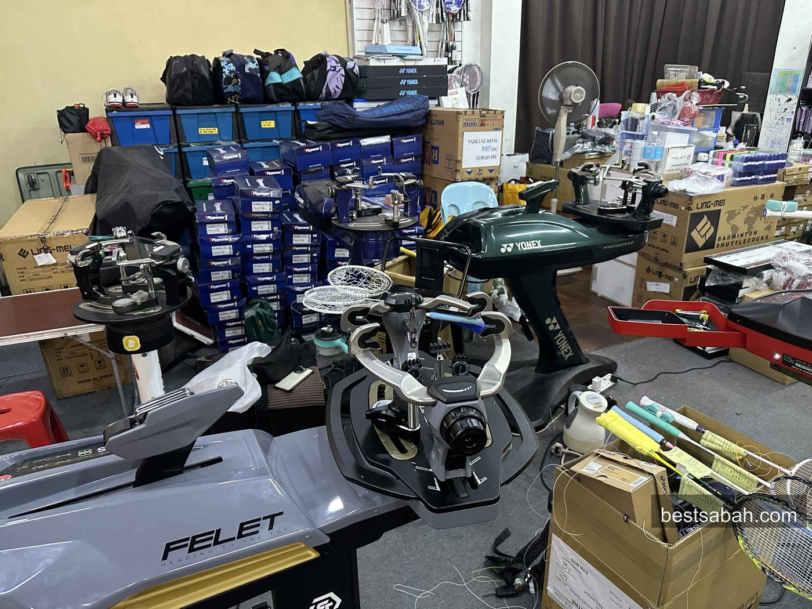
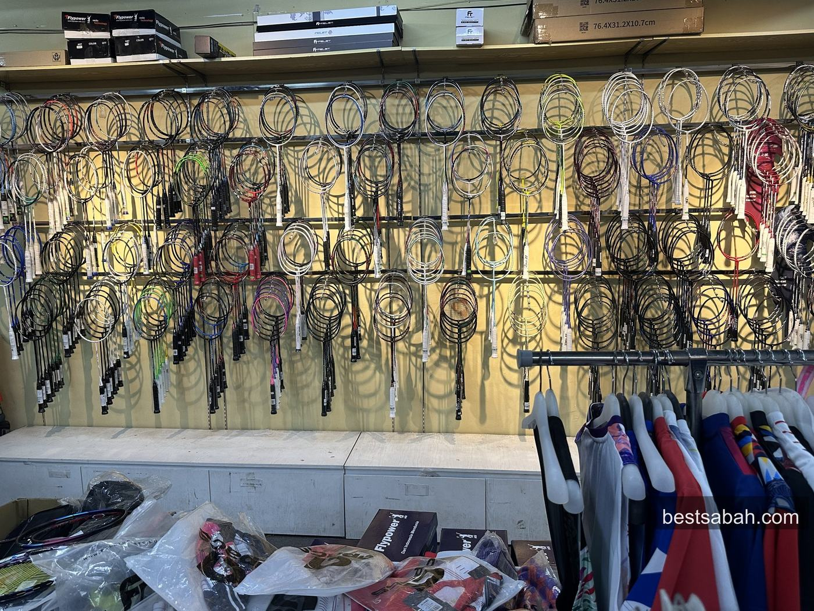
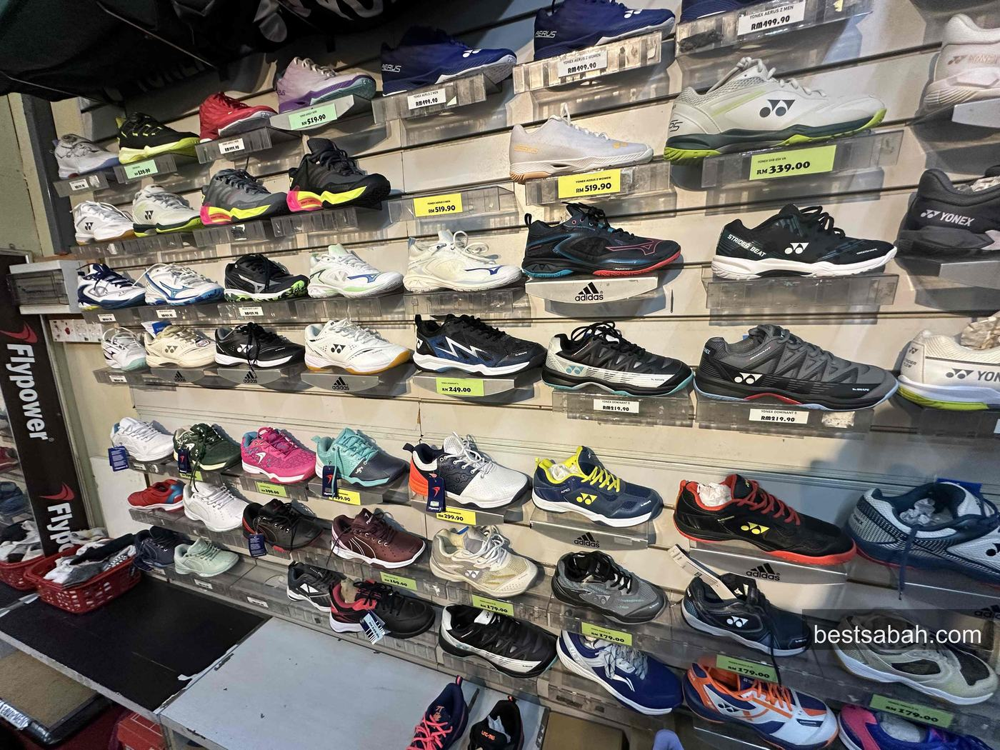
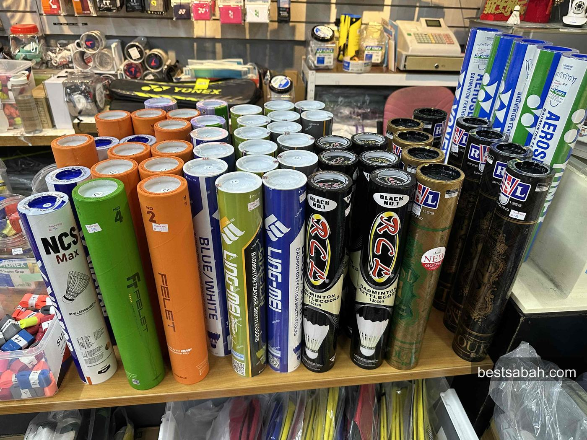
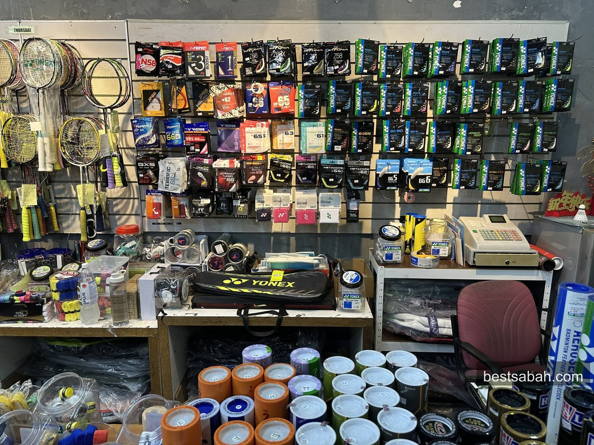
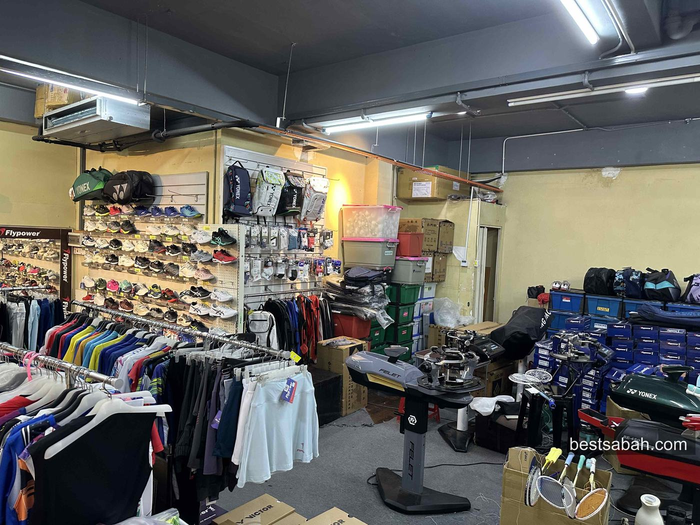

June 2026
The Best Badminton Shop in Kota Kinabalu: AST Sports Centre
Decades in the game, cheapest prices in KK, and stringing you can actually trust. If you play badminton in Sabah, this is the one shop you need to know.

If you play badminton in KK, you already know this place.
AST Sports Centre has been around for decades. It's tucked inside the Foochow Association Building in the heart of Kota Kinabalu, right next to the badminton courts. Location alone makes it convenient but that's not why people keep coming back.
The Stringing
This is what AST is known for. The best badminton stringing service in Kota Kinabalu — consistent, reliable, and affordable every single time. They have five stringing machines running and the staff actually know what they're doing. You tell them your tension, they deliver. No surprises.

Five machines running. You're not waiting long.
A lot of shops in KK do stringing. Not many do it this consistently. If your racket needs restringing before a tournament or you just snapped a string during a session next door, AST is the answer.

Every major string brand. Every tension you need.
The Selection
Walk in and the first thing you notice is how much is packed into this shop. Rackets from all the major brands. Shoes lined up along the wall. Shuttlecocks in every grade. Apparel, bags, grips, accessories. Whatever badminton equipment you need in Kota Kinabalu, it's all here.

Proper selection. Victor, Yonex, Li-Ning, all there.

Feather and synthetic, every grade.
Prices are some of the cheapest you'll find in KK. Not pasar malam cheap, but genuinely competitive for a proper sports shop. Worth checking here before you buy anywhere else.

The Service
The owner and staff are friendly and they actually know their stuff. Ask them about rackets, string tension, shoe fit, whatever. You'll get a real answer, not just a sales pitch.
They also run badminton training for kids if you're looking for that.

Practical Info
If you're coming in from Sarawak, Brunei, or anywhere else and need gear or stringing sorted, this is the one stop you need.
Address: Bangunan Persatuan Foochow, 88300 Kota Kinabalu, Sabah
Phone: 016-833 9951
Hours: Opens 10am daily
Parking: Ample parking available
Payment: Cash, debit, credit card, QR scan
Decades in the game. Cheapest prices. Best stringing in KK. Friendly staff. Right next to the courts.
Whether you've been playing for years or just picking up a racket for the first time, this is the shop to go to.